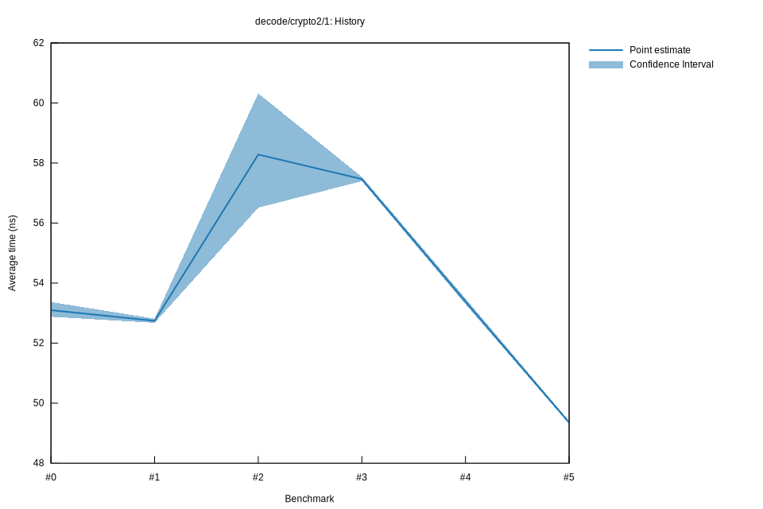

# 52022-10-16T20:16:19+03:00
|
Lower Bound |
Estimate |
Upper Bound |
| Value: |
49.31ns |
49.35ns |
49.40ns |
| Throughput: |
77.36MiB/s |
77.30MiB/s |
77.22MiB/s |
| Change in Value: |
-7.9523% |
-7.2774% |
-6.7113% |
| Change in Throughput: |
+8.6394% |
+7.8486% |
+7.1941% |
No change in performance detected.
# 42022-10-16T17:34:00+03:00
|
Lower Bound |
Estimate |
Upper Bound |
| Value: |
53.29ns |
53.38ns |
53.49ns |
| Throughput: |
71.58MiB/s |
71.46MiB/s |
71.32MiB/s |
| Change in Value: |
-6.9857% |
-6.4661% |
-5.8662% |
| Change in Throughput: |
+7.5103% |
+6.9131% |
+6.2318% |
No change in performance detected.
# 32022-10-15T17:23:22+03:00
|
Lower Bound |
Estimate |
Upper Bound |
| Value: |
57.40ns |
57.46ns |
57.54ns |
| Throughput: |
66.46MiB/s |
66.38MiB/s |
66.30MiB/s |
| Change in Value: |
+1.2185% |
+3.2434% |
+5.0047% |
| Change in Throughput: |
-1.2039% |
-3.1415% |
-4.7662% |
No change in performance detected.
# 22022-10-15T16:57:29+03:00
|
Lower Bound |
Estimate |
Upper Bound |
| Value: |
56.51ns |
58.28ns |
60.32ns |
| Throughput: |
67.50MiB/s |
65.45MiB/s |
63.24MiB/s |
| Change in Value: |
+3.4903% |
+5.2208% |
+7.3157% |
| Change in Throughput: |
-3.3726% |
-4.9618% |
-6.8170% |
No change in performance detected.
# 12022-10-08T17:32:56+03:00
|
Lower Bound |
Estimate |
Upper Bound |
| Value: |
52.68ns |
52.74ns |
52.81ns |
| Throughput: |
72.42MiB/s |
72.33MiB/s |
72.23MiB/s |
| Change in Value: |
-1.0326% |
-0.5830% |
-0.2051% |
| Change in Throughput: |
+1.0434% |
+0.5864% |
+0.2055% |
No change in performance detected.
# 02022-10-08T17:13:26+03:00
|
Lower Bound |
Estimate |
Upper Bound |
| Value: |
52.88ns |
53.10ns |
53.37ns |
| Throughput: |
72.14MiB/s |
71.84MiB/s |
71.48MiB/s |